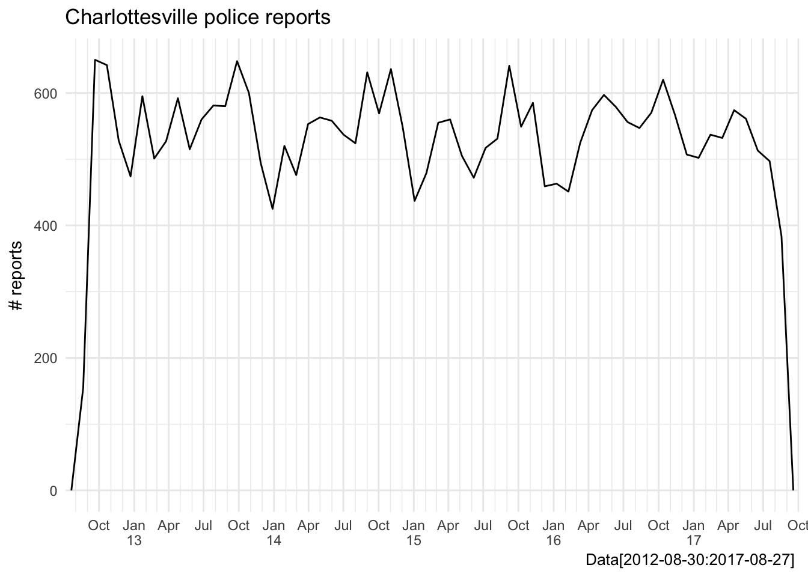
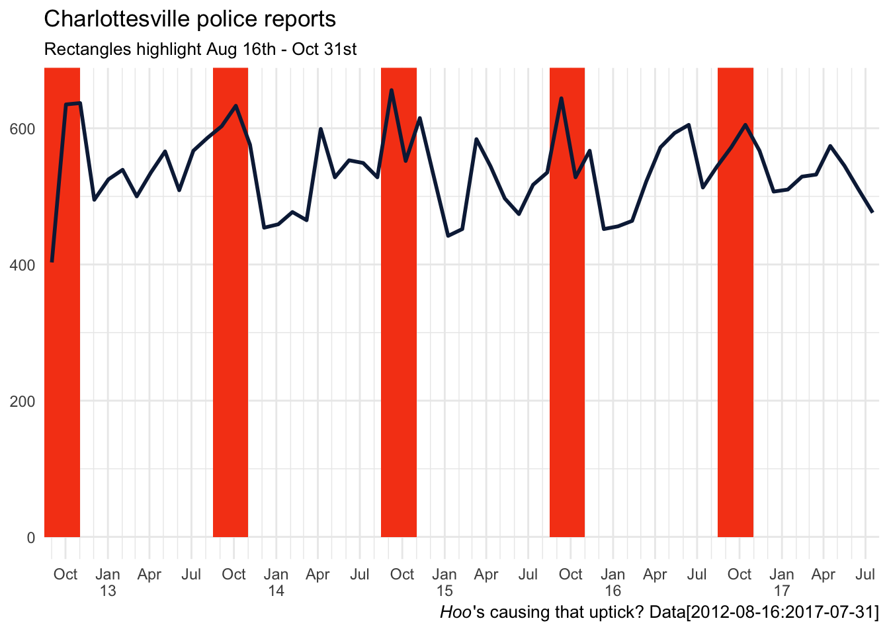
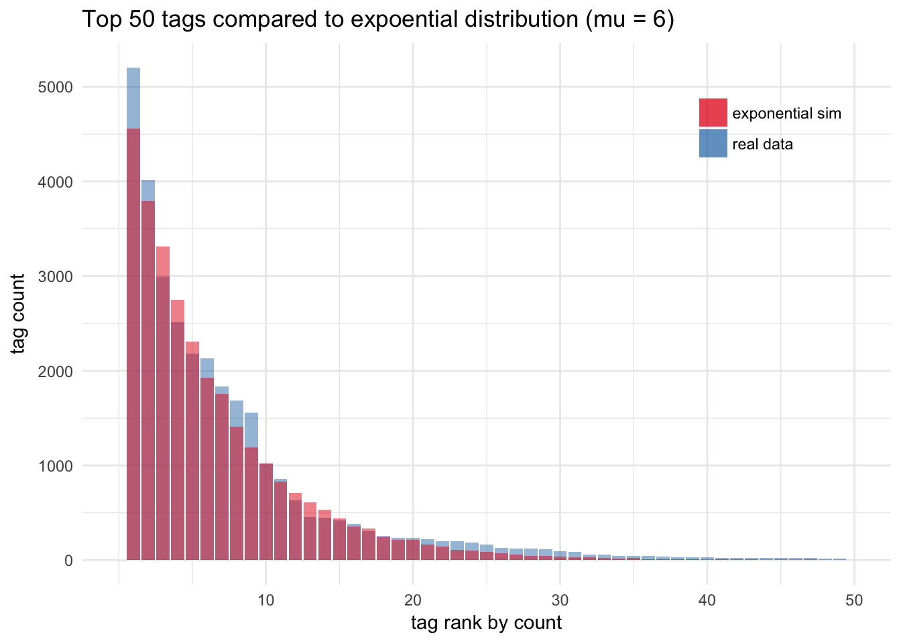
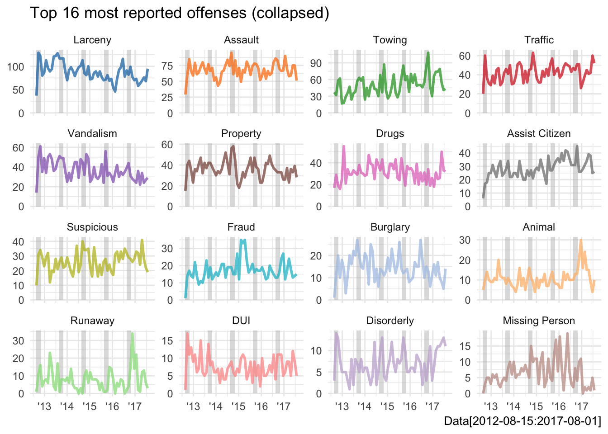
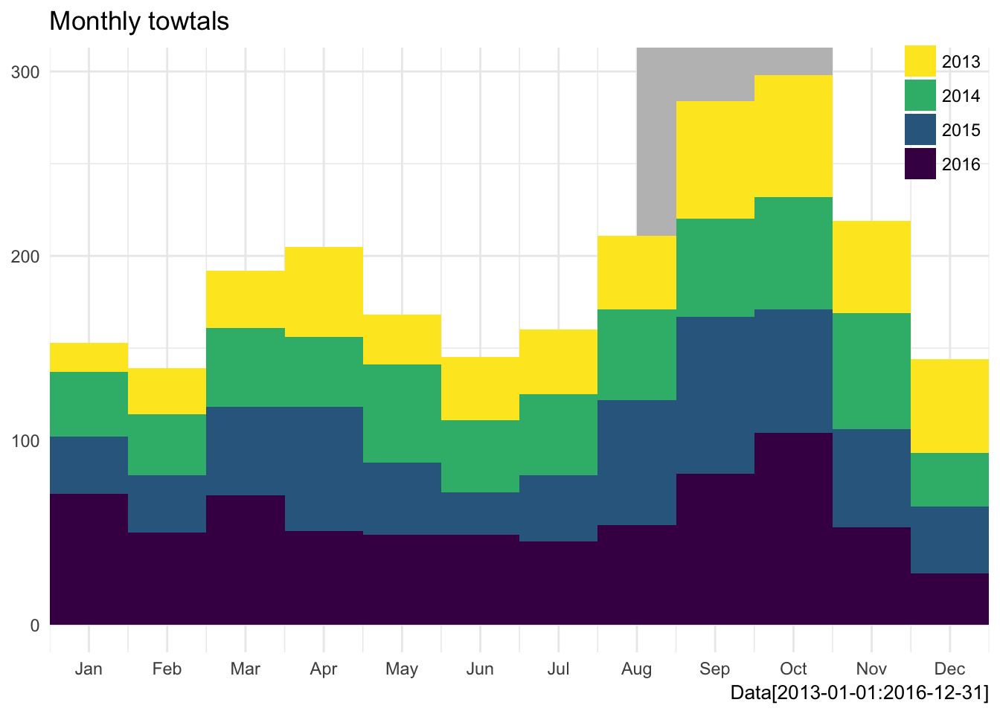
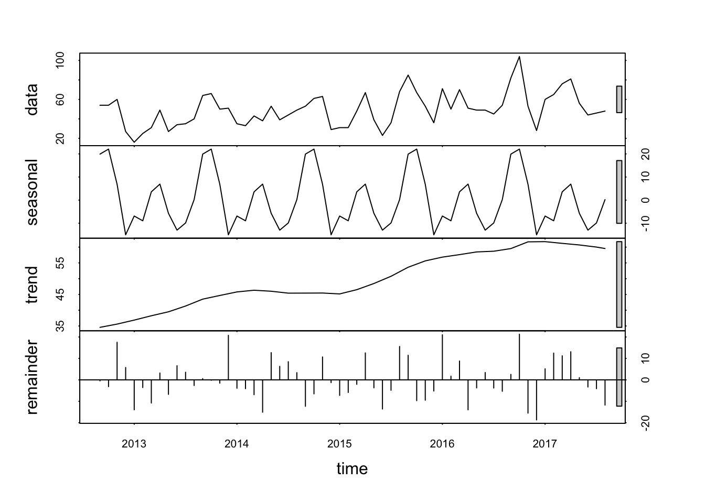
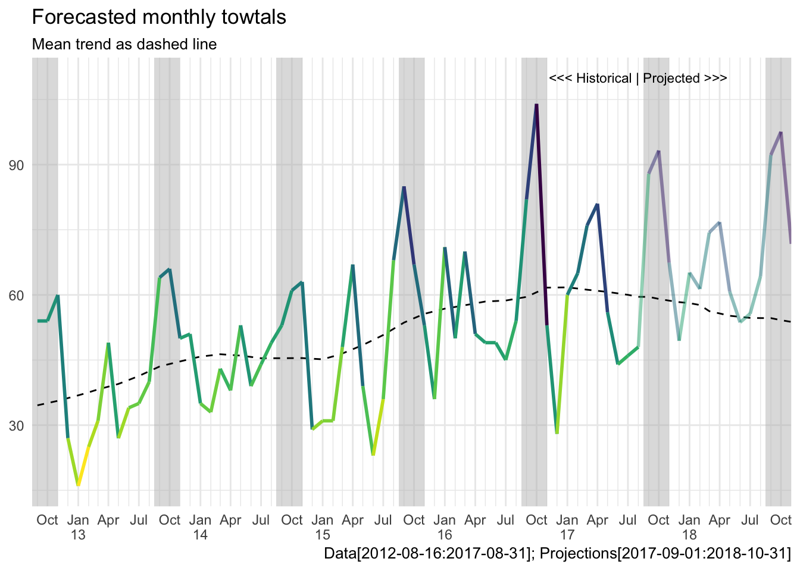

Opening the Charlottesville Open Data Portal with R
Time series modeling with the tidyverse
2017/09/04
Open up already!
Intro
I attended my first Charlottesville Data Science Meetup last month, for the launch of the city’s Open Data Portal. The meeting unveiled the new ODP, which consolidates a bunch of Charlottesville city records in one place, including Census, assessment, development, traffic and public safety data. The meetup featured a nice introduction to the portal and OpenSource Connections provided free craft beer and free Papa Johns!!!
I love the OPD concept and believe that data can help drive better decisions for Charlottesville. So I used my long Labor day weekend to write up an analysis, using the ODP to do some time-series forecasting with R.
The portal had a good layout and all of the data I have touched has been well formatted (thank you so much). So let’s dive into the analysis and I apologize for the typos, but not for the bad puns.
Import
I am a big user/believer of the R packages magrittr and tidyverse, so fair warning, this analysis is pipe-heavy. I think this is a better way to code
library(forecast) # time-series modeling
library(ggsci) # d3 color pallettes
library(forcats) # fct tools
library(lubridate) # date tools
library(magrittr) # piping
library(tidyverse) # data wranglin'
## ggplot set up block
# only theme once
theme_set(theme_minimal())
# custom fxns to aid with axis over-plotting and assist consistant intervals
brks <- seq(date("2012-07-01"), date("2018-10-01"), "3 months")
nicely <- function(breaks) {
values <- as.character(breaks) %>% strsplit("-")
m <- map(values, ~ as.numeric(.[2]) %>% month.abb[.])
y <- map(values, ~ gsub("20", "", .[1]))
labels <- map2(m, y, ~ paste0(., "\n", ifelse(. == "Jan", .y, "")))
return(labels) }I decided to start my OPD journey exploring the Public Safety > Crime Data, mainly because I’ve worked with crime data in the past. So I manually downloaded the csv from the link above and started a GitHub repository. I have yet to use the API, perhaps another day.
tib <- read_csv("~/future/CvilleTowing/Crime_Data.csv")
names(tib) %<>% tolower()
# these don't jive well with markdown
# head(tib)
str(tib, max.level = 1)## Classes 'tbl_df', 'tbl' and 'data.frame': 32128 obs. of 8 variables:
## $ recordid : int 1001 1002 1003 1004 1005 1006 1007 1008 1009 1010 ...
## $ offense : chr "LARCENY-ALL OTHER LARCENY" "FAMILY OFFENSE-NON-VIOLENT" "LARCENY-THEFT OF MOTOR VEHICLE PARTS/ACCESSORIES" "PROPERTY-LOST" ...
## $ incidentid : int 201206429 201206430 201206431 201206432 201206433 201206434 201206435 201206436 201206437 201206438 ...
## $ blocknumber : int 100 2000 900 1500 1000 700 100 600 100 100 ...
## $ streetname : chr "14TH ST NW" "STADIUM RD" "HENRY AVE" "UNIVERSITY AVE" ...
## $ agency : chr "CPD" "CPD" "CPD" "CPD" ...
## $ datereported: POSIXct, format: "2012-10-14 00:00:00" "2012-10-14 00:00:00" ...
## $ hourreported: chr "1042" "1350" "1203" "1348" ...
## - attr(*, "problems")=Classes 'tbl_df', 'tbl' and 'data.frame': 1 obs. of 5 variables:
## - attr(*, "spec")=List of 2
## ..- attr(*, "class")= chr "col_spec"The function read_csv imputes the column types from the first 1000 rows and never coherces chrs as fcts, both are nice upgrades from the base R read.csv. We can see in this case it correctly guessed datereported as POSIXct, but it didn’t call hourreported as POSIXct, so it’s not magic but the read_file family of functions definitely save some tidying time.
While the data comes off the shelf nicely formatted I still wanted to make some minor adjustments before I got into exploring.
tib %<>% select(-recordid) %>%
unite(address, blocknumber, streetname) %>%
rename_at(vars(contains("reported")), funs(gsub("reported", "", .))) %>%
mutate(hour = parse_time(hour, format = "%H%M"),
date = as.Date(date),
year = year(date),
month = month(date))Explore
Now that our data has been shaped up into something tidy, let’s start looking at the data visually and see juse what we have here.
ggplot(tib, aes(date)) +
geom_freqpoly(bins = 60) + # 60 months in 5 years
scale_x_date(breaks = brks, date_minor_breaks = "1 month",
labels = nicely, expand = c(0,0)) +
labs(title = "Charlottesville police reports",
y = "# reports",
x = NULL,
caption = "Data[2012-08-30:2017-08-27] ")
Looks like we have five years of continuous police reporting data going back to September 2012, not too shabby for a single csv. First glance tells us the total number of cases reported has been steady, maybe even decreasing slightly each year, which is good news for any community. It also looks like there is a consistent spike in the number of police reports each year around September and October, I wonder if we can figure out hoo/what is responsible for that fall spike in crime reports?
Hoo dunnit?
I don’t work with date or time data very often but when I do I always use the lubridate package. It maintains the tidy syntax and allows for easy manipulation (adding, subtracting, building sequence) of date and time period objects. Let’s use it here to build an series of annually reoccurring date ranges from mid-August to the end of October to feed in to geom_rect() highlight our window of interest.
students_back <- tibble(date = seq(as.Date("2012-09-01"), as.Date("2017-9-01"), length.out = 6),
date_min = date - ddays(16), # ~ Aug16
date_max = date %m+% months(2) ) # add to month
ggplot(tib, aes(date)) +
geom_rect(data = students_back, aes(xmin = date_min, xmax = date_max),
ymin = 0, ymax = Inf, fill = "#f64617") +
geom_freqpoly(bins = 60, color = "#0c2345", size = 1) + # 60 months in 5 years
scale_x_date(breaks = brks, date_minor_breaks = "1 month",
labels = nicely, expand = c(0,0),
limits = c(date("2012-08-16"), date("2017-07-31"))) +
labs(title = "Charlottesville police reports",
subtitle = "Rectangles highlight Aug 16th - Oct 31st",
x = NULL, y = NULL,
caption = expression(paste(italic("Hoo"), "'s causing that uptick?", " Data[2012-08-16:2017-07-31]")))
We all know correlation does not equal causation. But I would wager that this pattern is real and common for any community with a college (or transient population). Especially for Charlottesville, where the population swells by roughly 25% percent when the undergrads are in town, you would expect bump in all civic activity, including crime.
While this annual pattern is interesting, looking at the total counts doesn’t really tell us anything specific. Perhaps we can pull apart the total values and find some specific trends within single offense tags.
Offense frequency
This data is tagged quite well, of course there are a few inconsistent spellings but I can live with that for 32K rows. Let’s dive into the tags now, using the factor focused library(forcats) to help us arrange the offenses based on frequency. PS It really helps plot preparation :)
# there is a single incident (# 201404995) that is NA for offense
tib %<>% filter(!is.na(offense))
forcats::fct_inorder(tib$offense) %>% levels() %>% .[1:25]## [1] "LARCENY-ALL OTHER LARCENY"
## [2] "FAMILY OFFENSE-NON-VIOLENT"
## [3] "LARCENY-THEFT OF MOTOR VEHICLE PARTS/ACCESSORIES"
## [4] "PROPERTY-LOST"
## [5] "VANDALISM/DAMAGE/DESTRUCTION OF PROPERTY"
## [6] "ASSAULT-AGGRAVATED"
## [7] "PROPERTY-FOUND/RECOVERED"
## [8] "SUSPICIOUS CIRCUMSTANCES-SITUATION/PERSON/VEHICLE"
## [9] "PHONE CALLS-THREATENING OR OBSCENE"
## [10] "ASSAULT-SIMPLE"
## [11] "MOTOR VEHICLE THEFT/STOLEN AUTO"
## [12] "TRAFFIC-HIT AND RUN"
## [13] "BURGLARY/BREAKING AND ENTERING"
## [14] "VIOLATE PROTECTIVE ORDER"
## [15] "TRESPASS ON REAL PROPERTY"
## [16] "LARCENY-THEFT FROM MOTOR VEHICLE"
## [17] "LARCENY-THEFT FROM BUILDING"
## [18] "DRUG/NARCOTIC VIOLATION"
## [19] "COMMUNITY RELATIONS INITIATIVE (CRI)"
## [20] "TOWED VEHICLE"
## [21] "PERJURY"
## [22] "LARCENY-SHOPLIFTING"
## [23] "FRAUD-FALSE PRETENSES/SWINDLE/CONFIDENCE GAME"
## [24] "ASSAULT-INTIMIDATION"
## [25] "MISC CRIMINAL/STALKING"The list of the top 25 most frequent offense tags looks pretty consistent, all uppercase, with the “-” being consistently used to show sub-groups and the “/” being used to show aliases. To get a macro view of the type of crimes being committed I am going to collapse the subgroups moving forward. However I want to point out, this detailed naming system give us the ability to easily investigate subgroup differences, it’s a really nice surprise that it is formatted so well!
Probably my favorite functions out of library(forcats) are fct_infreq() and fct_inorder() The first does the equivalent of table() %>% sort(descreasing = T) %>% unique() to define the the levels of a factor, with the most frequent assigned lowest levels by default. It’s counter-part fct_inorder() assigns levels based on current tibble order, and this can be equally useful when piped after arrange(). arrange(mtcars, -cyl) %>% mutate(cyl = fct_inorder(cyl)). If you take one thing away from this write up hopefully these two are it, they are nice additions to R and big time savers for me.
tib$offense %<>% gsub("-.*", "", .) %>%
gsub("/.*", "", .)
# reset levels
tib$offense %<>% as.factor() %>%
forcats::fct_infreq()Now we have our tags collapsed and ordered by frequency, let’s look at the distribution of reports across offenses. I’m using a little as.numeric(any_factor) hack here to help avoid too much axis text. Also since most time-series data follows an exponential distribution, I went ahead and simulated a random draw from an exponential distribution with a mean of 6. This distribution comparison serves as a visualize sanity check to make sure we’re on the right path.
# simulated data
sims_tib <- tibble(offense = round(rexp(n = nrow(tib), rate = 1/6)))
# rate is defined as 1 / mu for exponential distributions
ggplot(tib, aes(as.numeric(offense), fill = "real data")) +
geom_bar(alpha = .5) +
geom_bar(data = sims_tib, aes(fill = "exponential sim"), alpha = .5) +
scale_fill_brewer(palette = "Set1", name = NULL) +
scale_x_continuous(breaks = seq(10,50,10), limits = c(0,50)) +
labs(title = "Top 50 tags compared to expoential distribution (mu = 6)",
y = "tag count", x = "tag rank by count") +
theme(legend.position = c(.85, .85))
The real data and the simulated data line up really well! I like doing these checks early on in an analysis, just to make sure I’m not missing any unexpected features or I’m not wasting my time on noise.
Now we are starting to feel pretty good about our dataset…let’s take a closer look at the top 16 tags and see if we can detect any interesting patterns that might help explain the overall spikes we were seeing in total cases in September and October.
top16 <- mutate(tib, offense = forcats::fct_infreq(offense)) %>%
filter(offense %in% levels(offense)[1:16]) %>%
droplevels()
# decode to shorter names for plotting
decode <- c("Larceny", "Assault", "Towing", "Traffic",
"Vandalism", "Property", "Drugs", "Assist Citizen",
"Suspicious", "Fraud", "Burglary", "Animal",
"Runaway", "DUI", "Disorderly", "Missing Person") %>%
set_names(levels(top16$offense))
# use forcats::fct_infreq() again
top16$offense %<>% decode[.] %>%
forcats::fct_infreq()
ggplot(top16, aes(date, color = offense)) +
geom_rect(data = students_back, aes(xmin = date_min, xmax = date_max),
ymin = -0, ymax = Inf, color = NA, fill = "grey", alpha = .5) +
geom_freqpoly(alpha = .75, bins = 60, size = 1) +
scale_x_date(breaks = seq(date("2013-01-01"), date("2017-01-01"), length.out = 5),
date_labels = "'%y", limits = c(date("2012-08-15"), date("2017-08-16"))) +
scale_color_d3(palette = "category20") +
facet_wrap(~offense, scales = "free_y") +
theme(legend.position = "none") +
labs(title = "Top 16 most reported offenses (collapsed)",
caption = "Data[2012-08-15:2017-08-01]",
y = NULL, x = NULL)
It looks like “Assault”, “Towing”, “Vandalism” and “Disorderly” all have yearly spikes during our August to November, interval of interest . “Towing” is the only one of those that looks like it has been increasing steadily over the last five years. I will be focusing on “Towing” only in the time-series modeling next, but remember that “Assault”, had sub-categories that we collapsed earlier, so that might be an interesting area to look into further if one where so inclined.
Forcast calls for tow
To get start with “Towing”, first lets quantify that year over year increase, we saw in the spark lines and get a better handle on the seasonal distribution with a nice stacked histogram.
tow <- filter(top16, offense == "Towing")
# drop 2012 and 2017 bc partial years
tow %<>% filter(!(year %in% c("2012", "2017")))
ggplot(tow, aes(as.numeric(month), fill = as.factor(year))) +
geom_rect(xmin = 8, xmax = 10.5, ymax = Inf, ymin = 0, fill = "grey", alpha = .5) +
geom_histogram(bins = 12) +
scale_x_continuous(breaks = 1:12, labels = month.abb, expand = c(0,0)) +
viridis::scale_fill_viridis(name = NULL, discrete = TRUE, direction = -1) +
labs(title = "Monthly tow-tals",
x = NULL, y = NULL,
caption = "Data[2013-01-01:2016-12-31]") +
theme(legend.position = c(.95, .9))
We can see that the big annual spike is peaking in Sept-Oct. There also is a small bump in March and April, which also coincides with students returning for semester. Perhaps there is something else lurking to better explain our towing report spikes? Football maybe?
Regardless it’s clear that this data set has repeated annual patterns. So if we want to model it, a simple lm() won’t do for accurately projecting future monthly towing totals.
This ia where the library(forecast) comes in to define a syntax for time series modeling. This wonderful package, built by Rob Hyndman, is on version 8.1 as of this typing and has long been the standard tool for time-series analysis with R. It comes loaded with a bunch of customization functions for smoothing and decomposing, but for now let’s stick to the basics to get going.
The first step to working with forecast() is to create a time.series object, which is just the response variable values grouped by time series period. Don’t worry they are easy to create and print very well in the console :)
# reset to all data
tow <- filter(top16, offense == "Towing")
month_tib <- arrange(tow, year, month) %>%
group_by(year, month) %>%
tally() %>%
ungroup() %>%
slice(-1) # drop Aug 2012 (only 6 cases)
month_vec <- select(month_tib, n) %>%
unlist()
# build time-series object
myts <- ts(month_vec, start = c(2012, 9), frequency = 12)
myts## Jan Feb Mar Apr May Jun Jul Aug Sep Oct Nov Dec
## 2012 54 54 60 27
## 2013 16 25 31 49 27 34 35 40 64 66 50 51
## 2014 35 33 43 38 53 39 44 49 53 61 63 29
## 2015 31 31 48 67 39 23 36 68 85 67 53 36
## 2016 71 50 70 51 49 49 45 54 82 104 53 28
## 2017 60 65 76 81 56 44 46 48Now that we have restructured our data for forecast(), we can take advantage of its really nice default model paramenters. To start with let’s peak at the underlying trends with the decomposition function stl(), which stands for Seasonal, Trend and Loess.
decomp_fit <- stl(myts, s.window= "periodic")
plot(decomp_fit)
That is a quick way to look at the model components. We can see our raw data, the seasonal model, the loess trend model, its residuals to the raw data. The model has detected the strong seasonal spike we saw in September and Octorber as well as the steady annual increase of tows reported.
Next let’s build a model that can combine the seasonal and trend components via HoltWinters(). This will allow us to project future towing report rates using all of the seasonal pattern information we have in our model to help us make more accurate predictions.
hw_fit <- HoltWinters(myts)
# plot(hw_fit)
# make predictions
month_preds <- forecast(hw_fit, 15) %>% # 15 periods ahead; returns Sep17 : Oct18
as.tibble %>%
.[[1]]Using for the abilities of forecast() it is easy to use our model for future projections. The only thing we have to do now is tidy up those projections so we can plot them.
# build a tidy tib for plotting
next_tib <- tibble(date = seq(date("2017-09-01"), date("2018-11-01"), "1 month"),
y = month_preds)
# format month_tib to match next_tib
month_tib %<>% mutate(date = date(paste(year, month, "01", sep = "-"))) %>%
rename(y = n)
# bind on AUG17 info for smoothness
aug17 <- month_tib[nrow(month_tib),]
next_tib %<>% bind_rows(aug17, .)Now we have built a data source ready to plug into ggplot() to show our model predictions for the next year.
Just to really drive home the difference of between the seasonal and loess trend component of our model, let’s build out the loess model for the identical interval, for co-plotting.
trend_fit <- HoltWinters(decomp_fit$time.series[,2])
trend_preds <- forecast(trend_fit, 15) %>%
as.tibble %>%
.[[1]]
# bind in old data in model
trend_past <- as.numeric(decomp_fit$time.series[,2])
trend_tib <- tibble(date = seq(date("2012-09-01"), date("2018-11-01"), by = "1 month"),
y = c(trend_past, trend_preds))Now all we have to do is layer them together.
# expand students_back for future
students_back2 <- tibble(date = seq(as.Date("2012-09-01"), as.Date("2018-09-01"), "1 year"),
date_min = date - ddays(16), # ~ Aug16
date_max = date %m+% months(2) )
# format next_tib
next_tib$year <- year(next_tib$date)
# projections plot
ggplot(month_tib, aes(date, y, color = y)) +
geom_rect(data = students_back2, aes(xmin = date_min, xmax = date_max, y = NULL),
ymin = -0, ymax = Inf, color = NA, fill = "grey", alpha = .5) +
geom_path(data = trend_tib, aes(x = date, y = y, color = NULL), linetype = 2) +
geom_path(size = 1) +
geom_path(data = next_tib, aes(y = y), size = 1, alpha = .5) +
annotate(geom = "text", label = "<<< Historical | Projected >>>", x = date("2017-08-01"), y = 110, size = 3) +
viridis::scale_color_viridis(name = NULL, direction = -1) +
scale_x_date(breaks = brks, date_minor_breaks = "1 month",
labels = nicely, expand = c(0,0),
limits = c(date("2012-08-16"), date("2018-11-01"))) +
labs(title = "Forecasted monthly tow-tals",
subtitle = "Mean trend as dashed line",
y = NULL,
x = NULL,
caption = "Data[2012-08-16:2017-08-31]; Projections[2017-09-01:2018-10-31]") +
theme(legend.position = "none")
We see the loess (dashed) trend moving back down towards the historical average in our projection, while the our total seasonal plus trend model is still climbing upward.
I hope this outline is a useful template for jumping into the ODP Crime Data with R. I know there a lot of trends in the Crime Data set that deserve more exploration, so time to get busy. Hopefully this portal can be used to have fun and build a more informed and engaged community. See you at the next Meetup!